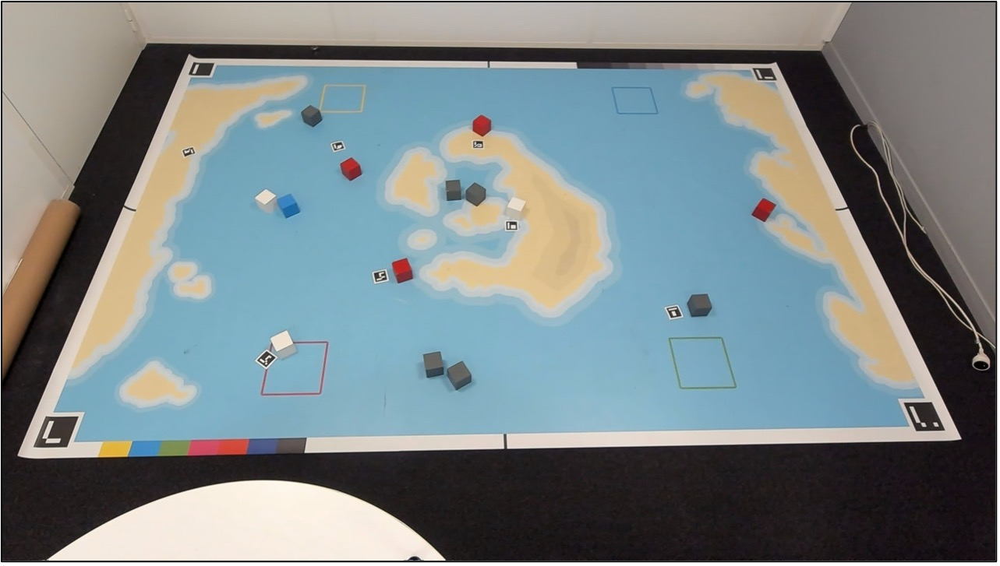
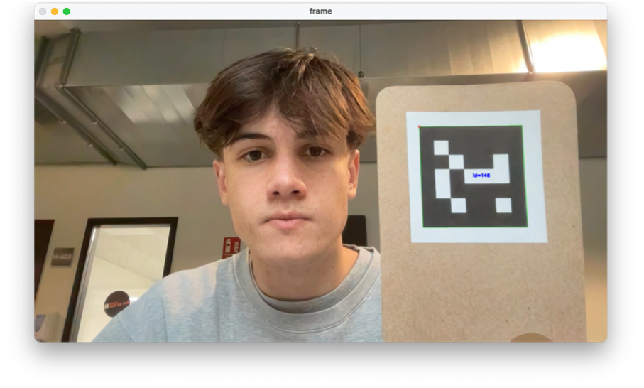
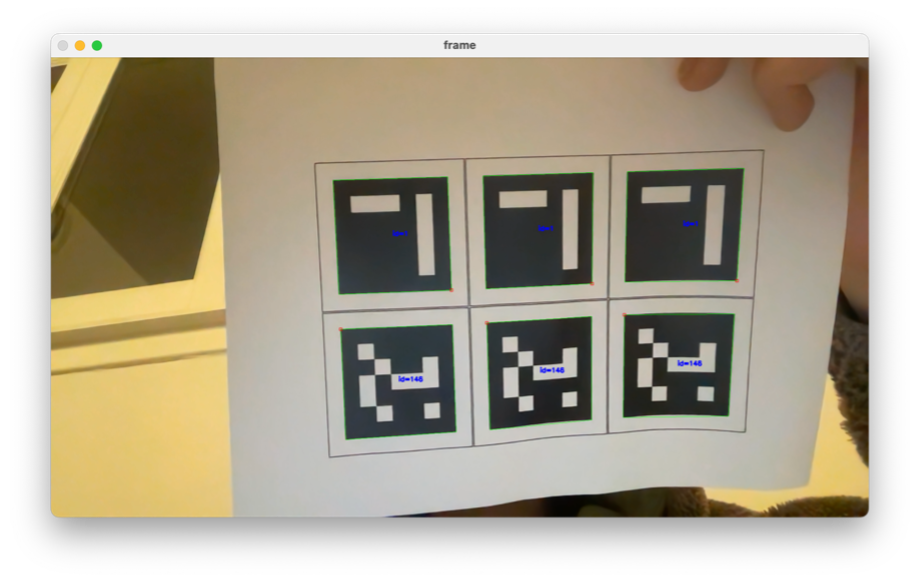
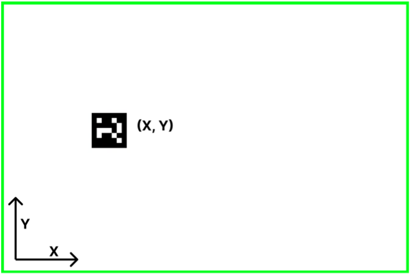
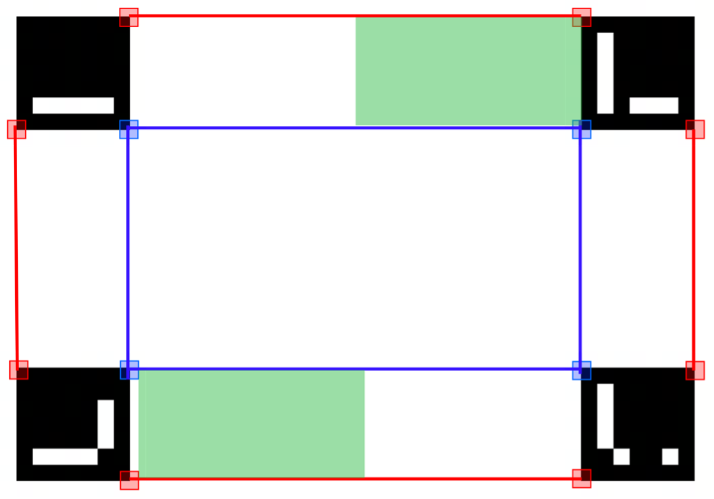
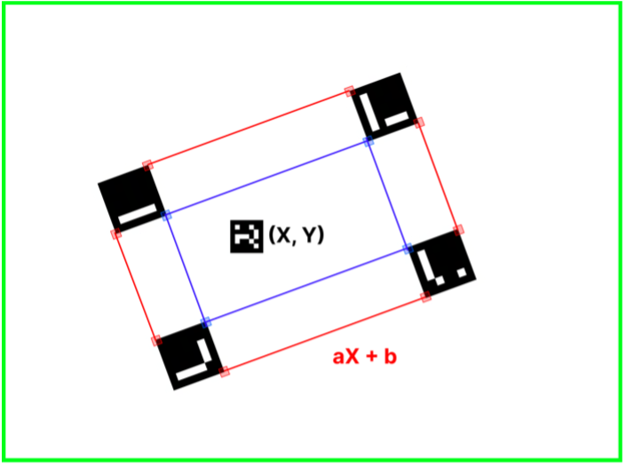
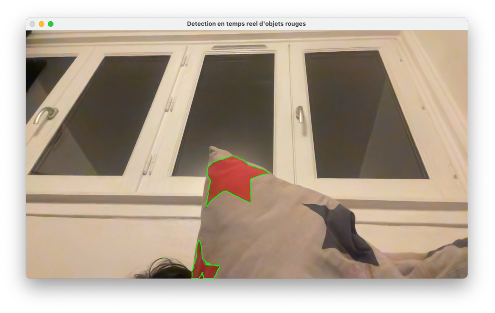
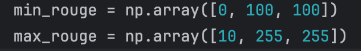

Équipe ROYROUX5
Un matin de novembre empreint de douceur, Jean-Félix découvrit le projet fondation. Inspiré par cette opportunité,
il
entreprit la quête de trouver les quatre meilleurs équipiers de Lyon. Il rencontra Aliénor, Côme, Chloé et Pia.
Ensemble, ils formèrent les "ROYROUX5", prêts à entreprendre l'aventure de la construction du robot le plus
optimisé et performant.
Ce qui nous rassemble c’est notre détermination pour produire un projet digne de ce nom. Notre principale qualité à
tous
est notre curiosité.
Chacun des membres de notre équipe diversifiée de cinq personnes possède des compétences techniques, spécifiques et
humaines cruciales pour la réussite du projet. Aliénor, directrice avec un talent exceptionnel pour la gestion du
temps,
apporte une expertise essentielle dans le développement d'algorithmes de reconnaissance d'objets. Chloé, aventurière
intrépide, se charge de la manière dont le robot captera les obstacles autour de lui. Côme, commandant de
l'intégration
matérielle et logicielle, garantit la stabilité du système. Jean-Félix, innovateur, se distingue par sa conception
mécanique robuste et sa coordination étroite avec les autres membres. Enfin, Pia, consul, joue un rôle central en
facilitant la collaboration, en coordonnant la communication interne et externe, et en assurant une vision globale
du
projet. Elle gère également l'espace nécessaire au déplacement du robot.
Ensemble, ces membres forment une équipe complète et bien équilibrée, prête à relever les défis de notre projet de
robotique.
Si la robotique a énormément évolué, en passant par la création de l’horloge jusqu'à la création de robot humanoïde
presque identique à l’homme. Aujourd’hui nous devons concevoir un petit robot roulant capable de détecter des objets
sur
un terrain à l’aide d’une liaison avec une caméra au-dessus du terrain.
Évidemment nous souhaitons à ce que notre projet aille au-delà de l'accomplissement technique. Il représente une
opportunité d'apprentissage académique et humain. Nous développerons des compétences en gestion de projet, en
travail
d'équipe, en assemblage de robots et en conception de prototypes physiques et numériques, couvrant aussi bien le
soudage
des composants que la programmation.
Cependant notre équipe s'est tout de même fixé pour objectif de non seulement répondre aux exigences du projet, mais
aussi de les surpasser. Nous reconnaissons que l'innovation et la créativité seront les clés de notre succès, et
c'est
avec cette mentalité que nous abordons chaque aspect de la conception du robot.
En ce qui concerne les améliorations, notre équipe explore des idées novatrices tant du côté matériel que logiciel.
L'introduction d'un capteur ultrason monté sur pivot, par exemple, constituerait une avancée significative en
accélérant
le repérage des objets. Nous envisageons également des améliorations substantielles du système d'alimentation du
robot
afin de tirer le meilleur parti de la performance des moteurs. En parallèle, l'intégration de capteurs de fin de
ligne
et d'autres capteurs optiques est envisagée pour accroître la précision des déplacements.
À travers ce travail, nous mettrons en valeur notre projet par des présentations, des discours oraux et des travaux
de
synthèse écrits, démontrant notre capacité à exceller et à innover. Notre équipe embrasse pleinement ce défi,
considérant chaque obstacle comme une opportunité d'innovation. Nous sommes impatients de partager nos progrès et de
démontrer la puissance de la collaboration et de l'ingéniosité au sein de l'équipe des ROYROUX5.
Tout d'abord, clarifions notre objectif principal : développer un système de reconnaissance d'images qui puisse non seulement repérer les contours de notre environnement, où le robot sera positionné, mais aussi identifier les divers objets présents. Par ailleurs, il est essentiel d'accorder une attention particulière à l'étape de calibrage des couleurs sur le plan. Cette étape revêt une importance cruciale pour garantir la fiabilité de notre système de reconnaissance d'objets.
Avant de commencer les explications voici une explication des différents termes et acronymes que nous utiliserons par la suite. Aruco -> Marqueur contenant un code binaire
Terme Définition Aruco Un marqueur contenant un code binaire
Avant de commencer à concevoir une solution technique pour notre projet nous avons dû réfléchir à quel moyen utiliser pour la concevoir. En effectuant quelques recherches sur internet nous avons rapidement remarqué que la conception d’un système de reconnaissance d’image comme celui que l’on souhaite faire peut se faire en C++ ainsi qu’en Python. Une recherche plus approfondie et quelques tests plus tard sur les différents langages de programmation nous avons fini par choisir de développer cette partie du projet en Pythons aux vues de toutes les ressources disponibles sur internet et de l’accessibilité de ce langage. Puis nous avons diviser cette partie du projet en deux grandes parties, une partie qui se concentrerais sur la reconnaissance des Arucos et une autre partie qui se concentrera sur la reconnaissance des différents objets sur le plateau et dans le même temps le calibrage des couleurs.
Dans cette partie nous exposerons nos recherches et notre avancement à propos de la reconnaissance des Arucos. Pour remettre dans le contexte le but du projet est de pouvoir : - Déterminer notre robot parmi les autres et parmi les leurres. - Déterminer les bordures du terrain sur lequel il est. - Déterminer les coordonnées du robot sur ce terrain. Il va donc falloir être méthodique dans la conception et attaquer une difficulté après l’autre. Commençons donc par déterminer notre robot parmi les autres et parmi les leurres. Nous avons précédemment justifié l’utilisation du langage python pour le développement et bien dans python nous allons utiliser une librairie : Open-CV qui nous sera très utile pour ce genre d’expérimentation. Cette bibliothèque nous permet d’étudier les codes Arucos grâce à un traitement d’image. Pour remettre dans le contexte un code Aruco est un code sous forme de marqueur, comme celui visible en figure 0.1. Il est en noir et blanc et possède une bande noir extérieur qui lui permet d’être repéré. En effet ce que Open-CV nous permet de faire est de traiter l’image que la caméra nous renvoie. Ce traitement nous permettra de discerner les bordures de cet Aruco dans une image avec beaucoup d’informations. Comme visible figure 0.2 où 6 Arucos apparaissent clairement sans distraction de contraste où d’éléments de couleur. Cela nous sera très utile pour la reconnaissance de ces codes sur le plan étant donné que celui-ci est chargé d’informations comme nous le verrons par la suite. Pour que les propos suivants aient plus de contexte voici le plan sur lequel notre robot évoluera :
On remarque sur cette photo en figure 1.1 les leurres dont nous parlions, qui sont les petits codes Aruco sur le terrain, mais aussi les 4 grands codes Aruco des coins qui nous permettrons de délimiter le terrain, dans cette partie nous ne parlerons pas des autres éléments. Ainsi il a fallu dans un premier temps développer un code python capable de différencier un Aruco d’un autre. Après quelques essais nous obtenons ce résultat visible en figure 1.2. Grâce au code que nous avons fait nous sommes capables de récupérer une valeur très utile pour différencier chacun des Arucos : leurs clés individuelles, le code que l’Aruco renferme, en effet chaque Aruco possède un code unique ainsi nous pouvons nous baser sur cette clé pour différencier chacun des Arucos. Dans l’exemple de la figure 1.2 nous avons essayé notre code avec l’Aruco représentant notre robot, son ID est 146 comme le numéro de notre groupe. Ici, nous avons décidé d’afficher cette valeur que l’on récupère, sur l’Aruco directement, pour simplifier l’identification mais nous pouvons facilement renvoyer cette valeur dans le terminal ou ailleurs pour l’utilisation de celle-ci dans le futur. Pour vérifier que la distinction entre les différents Arucos se fasse bien nous avons tout de même vérifié cela avec plusieurs codes sur la même pas comme visible en figure 1.3, notre algorithme fonctionne bien aux vues des résultats.
On remarque sur l’image les bordures vertes et le code bleu au centre des Arucos, signe que notre algorithme le reconnait.
En utilisant cet algorithme sur les principaux Arucos qui nous seraient utile nous récupérons donc ces clés d’identification. Ainsi on note que notre robot sera l’Aruco portant le code 146 comme le numéro de notre équipe. Puis les quatre autres Arucos testés sont ceux des 4 coins du plan de jeu, qui nous seront utiles par la suite. On remarque que leur clé va de 0 à 3 ce qui est simple à retenir. Nous avons synthétisé ces informations dans le tableau ci-dessous. Maintenant nous cherchons à utiliser ces Arucos dans un autre but, il faut que nous déterminions des coordonnées grâce à leur positionnement par rapport à notre caméra. Schématisons la situation, nous voulons obtenir un résultat similaire au schéma visible en figure 1.4.
Ici la bordure verte délimite la vision de notre caméra et nous devrons ressortir les valeurs de coordonnées en abscisse et ordonné de notre Aruco par rapport à ce que notre caméra nous renvoie. La valeur dépendra ainsi de la qualité de notre caméra étant donné que les coordonnées auront un équivalent en pixel. De plus il faudra penser le système de façon à être le plus optimal pour la suite du développement et récupérer toutes les valeurs nécessaires. Après réflexion nous avons décidé que nous voulions récupérer les coordonnées des quatre coins de nos Arucos, ainsi nous pourrions déterminer le centre de ceux-ci si nécessaire mais aussi délimiter des zones et même plus tard étudier les perspectives de nos plans plus précisément. Ainsi nous avons compléter notre algorithme précédent pour nous renvoyer dans le terminal les valeurs qui nous intéressaient. Nous obtenons le résultat ci-dessous. Ainsi nous obtenons bien les coordonnées de chaque coin, cela va maintenant nous être utile pour déterminer notre surface de jeu. En effet maintenant que nous connaissons les 4 Arucos représentant les 4 coins du plan de jeu, et que nous sommes capable de connaitre les coordonnées de chacun des coins de nos Arucos nous pouvons délimiter notre terrain et toutes les zones spéciales de celui-ci. Le schéma de cette situation est le suivant, avec les coordonnées des différents coins nous pouvons délimiter des zones de cette façon :
Ainsi la zone intérieure bleue serait le terrain de jeu. De plus nous pourrions déterminer des zones précise pour le calibrage, comme indiqué en vert sur le schéma, pour calibrer par la suite, nos couleurs dans les zones prévues pour cela. Finalement grâce à ce système de coordonnées nous devions être capable de déterminer les coordonnées de notre robot dans celui-ci. Pour parvenir à cela nous allons utiliser des maths. Nos différentes zones citées précédemment nous ont notamment permis de créer des droites entre chaque sommet. Ainsi il est facile de récupérer les fonctions de celles-ci étant donné que ce sont des droites affines. Puis en soustraient la valeur de notre ordonnée primaire avec la cette nouvelle fonction nous obtenons les coordonnées de notre robot dans le plan. La technique mathématique n’est pas compliquée mais reste à perfectionnée mais l’idée est là.
Ici de la même manière que précédemment la zone verte représente la vision de la caméra, le plan en fait partie, nous récoltons les cordonnées X et Y de notre robot au centre. Cependant ces coordonnées sont celles définies par rapport à la caméra il va nous les falloir les adapter au plan. Nous récupérons l’équation de la droite des contours du plan qui nous permettra de récupérer la valeur d’ordonnée du robot en la substituant aux coordonnées du robot. Ainsi nous avons rempli les objectifs demandés pour cette partie. Le code n’est pas finalisé sur la partie mathématique du problème mais nous travaillons dessus.
Maintenant concentrons-nous sur la partie relative à la reconnaissance de couleur et d’objets. Pour commencer nous avons pour cette partie utilisé la même bibliothèque que précédemment avec l’ajout du Numpy une autre bibliothèque qui nous permettra de gérer au mieux les valeurs utiles. Concentrons-nous d’abord sur la calibration des couleurs. La calibration des couleurs va nous être utile pour la suite pour déterminer vers quel objet le robot va se diriger et où ce dernier va le déplacer. Or pour un algorithme une couleur est une valeur et cette valeur reste à calibrer dans un premier temps pour assurer la justesse de son observation, en effet la couleur perçue par la caméra ne sera jamais la même fonction de la couleur des lumières de la salle mais aussi de la caméra elle-même. De ce fait sur le plan du jeu sont disposés deux indices de calibrages de couleurs, l’un de contraste et l’autre de couleur. Sur la figure ci-dessous ils sont clairement identifiables en haut à droite et en bas à gauche du terrain sous forme de bande.
On remarque ainsi que dans ces zones se sont les seuls couleurs présentes, et nous avons vu précédemment comment déterminer la zone d’intérêt d’un algorithme en fonction d’une zone. En récupérant les valeurs de l’algorithme précédent il est simple de focaliser notre algorithme sur une zone de travail précise. Nous avons donc créé un algorithme de reconnaissance de couleur, cependant dans cette version nous lui imposons nous-même la couleur à reconnaitre ainsi dans cet exemple nous avions mis du rouge. L’algorithme nous permet de délimiter une zone où il perçoit la couleur qu’on lui a indiqué.
Or pour la suite la logique est inverse, il va falloir que l’algorithme calibre ses valeurs de couleurs sur celles qu’il perçoit. Pour le premier exemple, nous avons défini une valeur de couleur minimal à capter pour le rouge et une maximal comme visible figure 2.3.
Cette logique est bonne pour le début de l’algorithme mais ces valeurs devront être changées dès que l’algorithme se lance. Pour ce faire nous indiquerons à l’algorithme dans quelle zone effectuer sa reconnaissance à son lancement et réduirons la plage de valeur jusqu’à obtenir une zone couverte représentant le bon ratio en fonction de la hauteur de la zone de test. Après quelques recherches la méthode est la même pour le contraste en faisant une différence entre les canaux Y et B. On peut facilement imaginer exécuter ce procédé une fois par couleur pour toutes les calibrer. Ainsi cet algorithme s’effectuera au lancement du projet pour calibrer nos couleurs puis l’algorithme tournera avec les valeurs récupérées au début. Pour encore plus de justesse on peut imaginer appeler cette fonction à intervalle régulier lors de l’exécution du code principale pour vérifier le calibrage.
En conclusion, notre parcours dans la conception de la solution technique pour notre projet de reconnaissance d'image a été marqué par une démarche réfléchie et méthodique. Le choix du langage de programmation Python s'est avéré judicieux, compte tenu de la richesse des ressources disponibles en ligne et de la facilité d'accès à ce langage. La première partie du projet, axée sur la reconnaissance des Arucos, a été abordée de manière approfondie. Nous avons détaillé la méthode d'utilisation de la bibliothèque OpenCV pour traiter les images de la caméra, distinguant avec succès les Arucos et récupérant leurs clés d'identification. Les efforts sont également en cours pour déterminer les coordonnées du robot dans le plan, impliquant une approche mathématique qui promet d'ajouter une précision essentielle à notre système. Dans la seconde partie, nous avons exploré le calibrage des couleurs et la reconnaissance d'objets. Nous avons souligné l'importance du calibrage des couleurs pour garantir la précision de la reconnaissance, expliquant comment les zones spécifiques du terrain étaient utilisées à cet effet. L'idée d'intégrer une vérification périodique du calibrage pendant l'exécution du code principal témoigne de notre engagement envers la constance de la performance. En résumé, notre approche systématique, associée à des explications détaillées de chaque étape du processus, a jeté les bases solides pour la réalisation complète de notre projet. Nous anticipons avec optimisme la finalisation de la partie mathématique de la détermination des coordonnées du robot et l'achèvement global de la solution technique. Ce projet nous a permis d'explorer divers aspects de la vision par ordinateur et de renforcer nos compétences dans le domaine de la reconnaissance d'image. Nous sommes impatients de présenter notre travail lors de la soutenance et de partager les résultats finaux de notre solution.